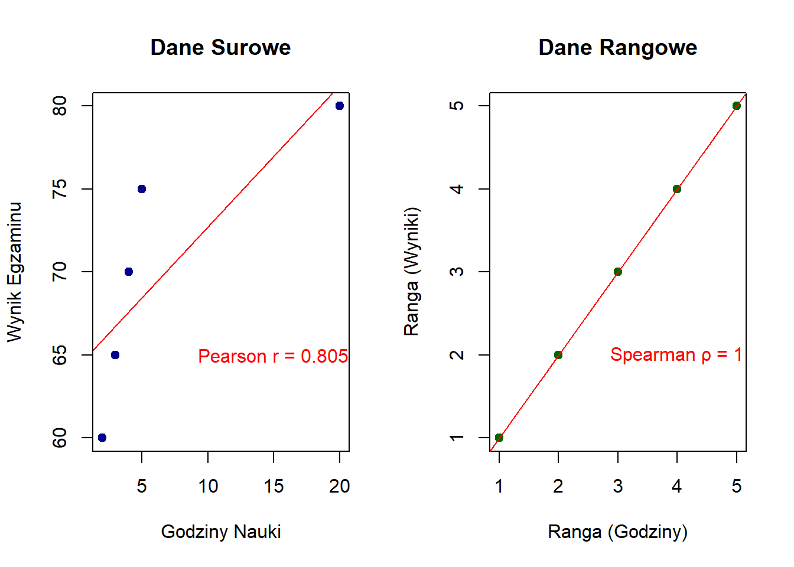
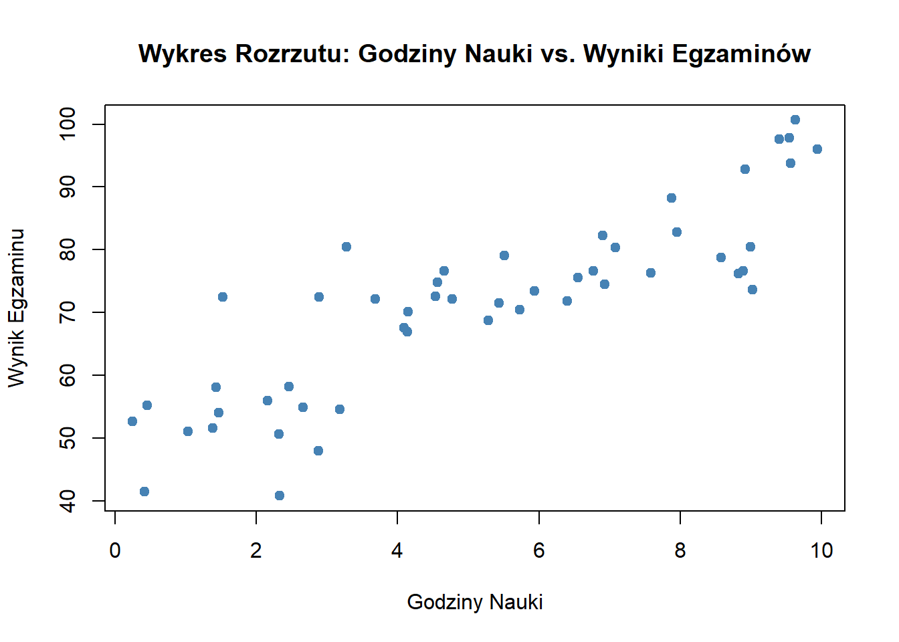
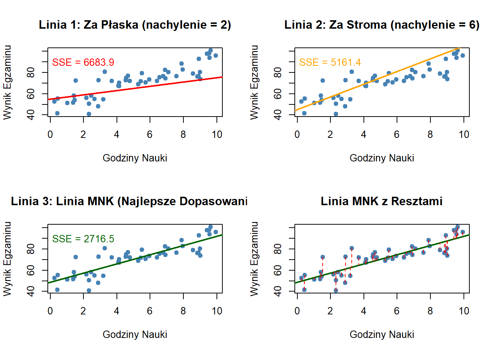
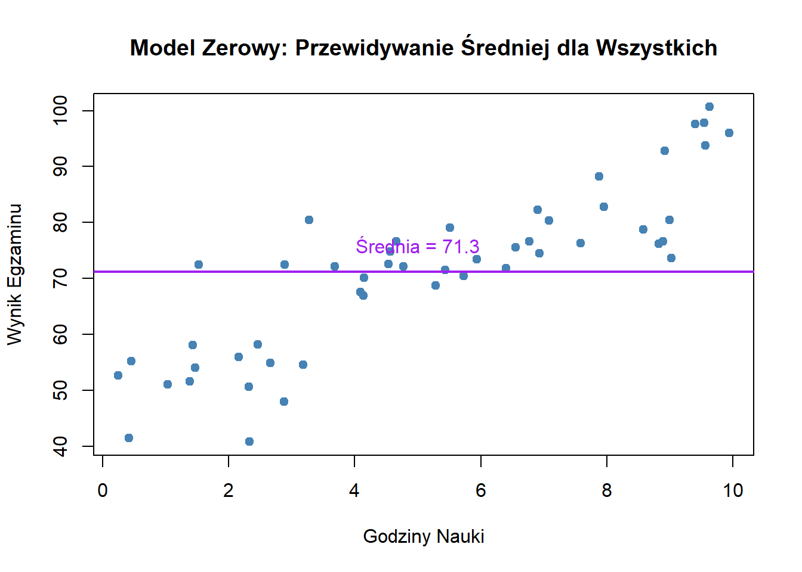
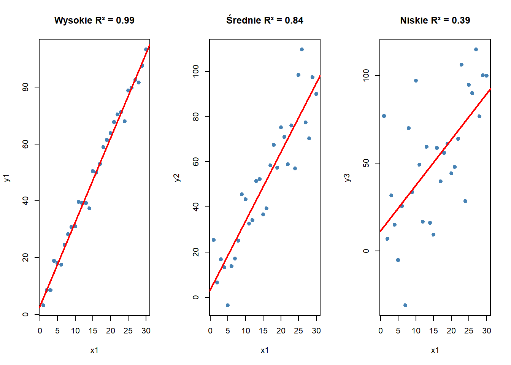
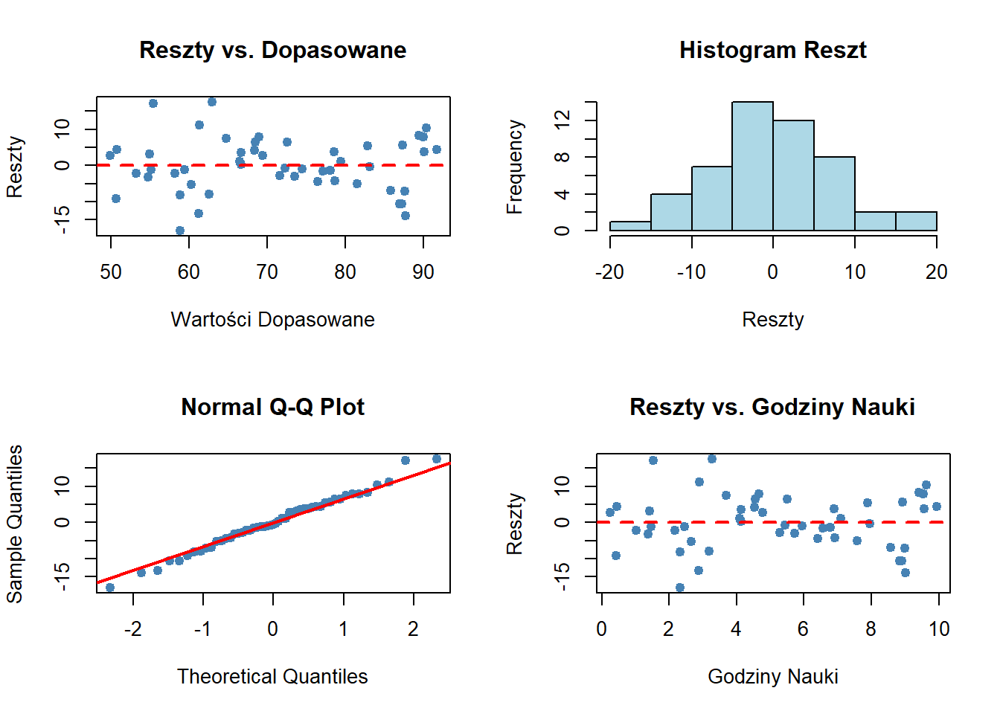
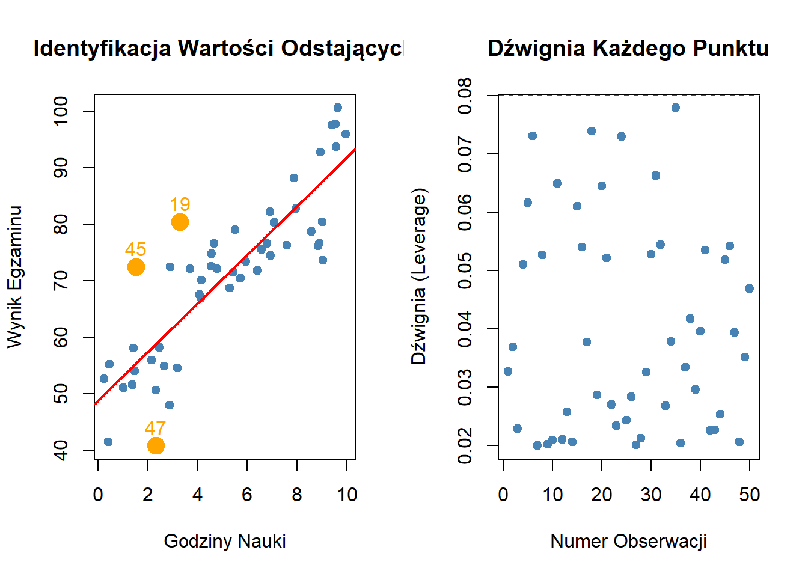
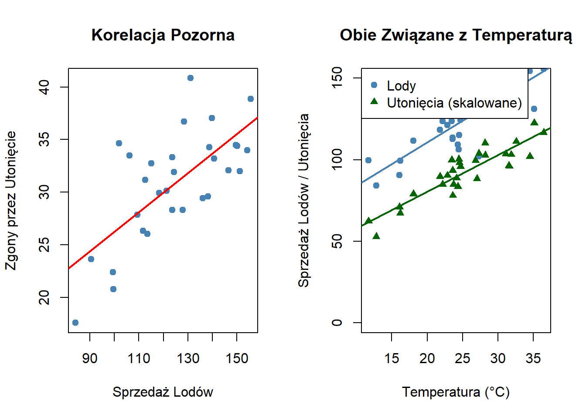
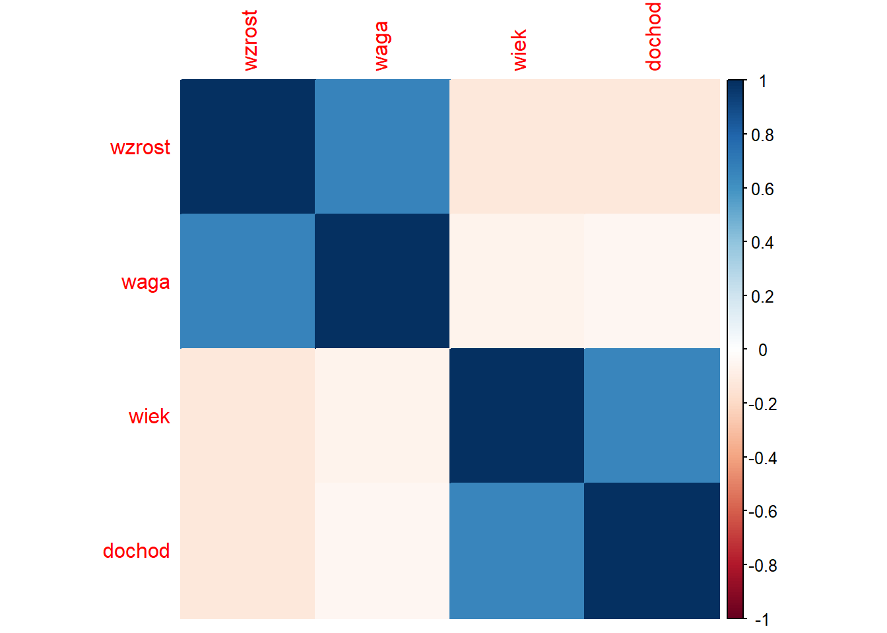

Rozróżnienie między korelacją a związkiem przyczynowym stanowi fundamentalne wyzwanie w analizie statystycznej. Podczas gdy korelacja mierzy statystyczne powiązanie między zmiennymi, związek przyczynowy implikuje bezpośredni wpływ jednej zmiennej na drugą.
Relacje statystyczne stanowią fundament podejmowania decyzji opartych na danych w różnych dyscyplinach—od ekonomii i zdrowia publicznego po psychologię i nauki o środowisku. Zrozumienie, kiedy związek wskazuje jedynie na asocjację, a kiedy na prawdziwą przyczynowość, jest kluczowe dla trafnego wnioskowania i skutecznych rekomendacji politycznych.
10.2 Podstawy Teoretyczne
Kowariancja
Kowariancja mierzy, jak dwie zmienne zmieniają się wspólnie, wskazując zarówno kierunek, jak i wielkość ich liniowego związku. Stanowi ona podstawę do zrozumienia korelacji, ale ma kluczowe ograniczenie: jej wartość zależy od jednostek miary, co utrudnia porównania między różnymi zbiorami danych.
Dzielimy przez (n-1) dla kowariancji próbkowej (korekta Bessela)
Interpretacja:
Kowariancja dodatnia: Zmienne mają tendencję do wzrostu razem
Kowariancja ujemna: Gdy jedna zmienna rośnie, druga ma tendencję do spadku
Kowariancja zerowa: Brak liniowego związku (zmienne zmieniają się niezależnie)
Problem skali: Kowariancji 37,5 i 7245 nie można bezpośrednio porównać—skala zależy od jednostek X i Y
Współczynnik Korelacji
Współczynnik korelacji standaryzuje kowariancję, eliminując zależność od skali i produkując wartości między -1 a +1. Ta standaryzacja sprawia, że współczynniki korelacji są porównywalne między różnymi zbiorami danych i jednostkami miary.
Wytyczne Interpretacyjne:
Wartość Korelacji
Siła
Interpretacja
Przykład
±0,90 do ±1,00
Bardzo Silna
Niemal doskonały związek
Wzrost rodziców i dzieci
±0,70 do ±0,89
Silna
Zmienne silnie powiązane
Czas nauki a oceny
±0,50 do ±0,69
Umiarkowana
Zmienne umiarkowanie powiązane
Ćwiczenia a utrata wagi
±0,30 do ±0,49
Słaba
Zmienne słabo powiązane
Rozmiar buta a umiejętność czytania
±0,00 do ±0,29
Bardzo Słaba/Brak
Mały lub brak związku
Miesiąc urodzenia a inteligencja
Współczynnik Korelacji Pearsona
Współczynnik r Pearsona mierzy liniowy związek między dwiema zmiennymi ciągłymi. Zakłada, że związek można odpowiednio opisać linią prostą.
Gdzie s_X i s_Y to próbkowe odchylenia standardowe X i Y.
Właściwości:
Zakres: -1 \leq r \leq 1
r = 1: Doskonały dodatni związek liniowy
r = -1: Doskonały ujemny związek liniowy
r = 0: Brak liniowego związku (ale związki nieliniowe mogą nadal istnieć)
Wrażliwy na wartości odstające i wzorce nieliniowe
Współczynnik Korelacji Rang Spearmana
Współczynnik \rho (rho) Spearmana mierzy związki monotoniczne używając rang zamiast wartości surowych. Związek monotoniczny oznacza, że gdy jedna zmienna rośnie, druga konsekwentnie rośnie lub maleje, ale niekoniecznie w stałym tempie.
Gdzie d_i to różnica między rangami odpowiadających obserwacji.
Kiedy używać Spearmana vs. Pearsona:
Użyj Pearsona gdy:
Obie zmienne są ciągłe
Związek jest liniowy
Dane mają w przybliżeniu rozkład normalny
Brak znaczących wartości odstających
Użyj Spearmana gdy:
Zmienne są porządkowe (dane rangowe)
Związek jest monotoniczny, ale nieliniowy
Dane zawierają wartości odstające
Rozkłady są skośne
Wizualizacja Wzorców Korelacji
# Generowanie przykładowych danych z różnymi wzorcami korelacjin <-100# Dodatnia korelacja liniowaset.seed(123)lata_edukacji <-rnorm(n, 14, 3)roczny_dochod <-15000+3500* lata_edukacji +rnorm(n, 0, 10000)pos_cor <-round(cor(lata_edukacji, roczny_dochod), 3)# Ujemna korelacja liniowaczas_ekranu <-runif(n, 1, 8)godziny_snu <-9-0.5* czas_ekranu +rnorm(n, 0, 0.5)neg_cor <-round(cor(czas_ekranu, godziny_snu), 3)# Brak korelacjix_losowe <-rnorm(n, 50, 10)y_losowe <-rnorm(n, 50, 10)no_cor <-round(cor(x_losowe, y_losowe), 3)# Korelacja nieliniowa (kwadratowa)godziny_nauki <-runif(n, 0, 12)wynik_testu <--2* (godziny_nauki -6)^2+90+rnorm(n, 0, 5)nonlin_cor <-round(cor(godziny_nauki, wynik_testu), 3)# Tworzenie ramek danych z wartościami korelacjidane_dodatnie <-data.frame(x = lata_edukacji, y = roczny_dochod,etykieta =paste0("Liniowa Dodatnia (r = ", pos_cor, ")"))dane_ujemne <-data.frame(x = czas_ekranu, y = godziny_snu,etykieta =paste0("Liniowa Ujemna (r = ", neg_cor, ")"))dane_brak <-data.frame(x = x_losowe, y = y_losowe,etykieta =paste0("Brak Korelacji (r = ", no_cor, ")"))dane_nieliniowe <-data.frame(x = godziny_nauki, y = wynik_testu,etykieta =paste0("Nieliniowa (Pearson r = ", nonlin_cor, ")"))# Łączenie danychwszystkie_dane <-rbind(dane_dodatnie, dane_ujemne, dane_brak, dane_nieliniowe)# Tworzenie wykresu wielopanelowegoggplot(wszystkie_dane, aes(x = x, y = y)) +geom_point(alpha =0.6, color ="darkblue", size =2) +geom_smooth(method ="lm", color ="red", se =TRUE, alpha =0.3) +facet_wrap(~ etykieta, scales ="free", ncol =2) +labs(title ="Różne Typy Korelacji",subtitle ="Linia regresji liniowej pokazana na czerwono z pasmem ufności",x ="", y ="" ) +theme_minimal() +theme(strip.text =element_text(size =10, face ="bold"),plot.title =element_text(size =14, face ="bold"),plot.subtitle =element_text(size =10, color ="gray50") )
`geom_smooth()` using formula = 'y ~ x'
Ważna Uwaga: Panel w prawym dolnym rogu demonstruje, dlaczego korelacja Pearsona może być myląca dla związków nieliniowych. Pomimo wyraźnego wzorca, wartość r Pearsona jest bliska zeru, ponieważ związek nie jest liniowy. W takich przypadkach bardziej odpowiednia byłaby korelacja Spearmana lub modelowanie nieliniowe.
10.3 Metody Obliczeń Ręcznych
Ta sekcja przedstawia krok po kroku procedury obliczeń ręcznych (na papierze) dla kowariancji i współczynników korelacji. Te ręczne obliczenia są niezbędne do zrozumienia konceptualnych podstaw tych miar.
Obliczanie Kowariancji: Krok po Kroku
Przykład: Godziny Nauki Studentów vs. Wyniki Testów
r = \frac{7245}{25,77 \times 286,36} = \frac{7245}{7380,14} = 0,982
Interpretacja: Bardzo silna dodatnia korelacja (r = 0,982) wskazuje, że wraz ze wzrostem temperatury, sprzedaż lodów rośnie proporcjonalnie. Kowariancja 7245 potwierdza ten dodatni związek, choć jej wielkość jest trudna do interpretacji bez standaryzacji.
Interpretacja: Korelacja Spearmana \rho = 0,8 wskazuje na silny dodatni monotoniczny związek między rangami w matematyce i fizyce. Studenci, którzy zajmują wyższą pozycję w matematyce, mają tendencję do zajmowania wyższej pozycji w fizyce.
r = \frac{190/4}{7,46 \times 7,91} = \frac{47,5}{59,01} = 0,805
Część 2: Korelacja Spearmana
Rangi:
X
Ranga(X)
Y
Ranga(Y)
d
d^2
2
1
60
1
0
0
3
2
65
2
0
0
4
3
70
3
0
0
5
4
75
4
0
0
20
5
80
5
0
0
\rho = 1 - \frac{6 \times 0}{5(24)} = 1 - 0 = 1,0
Wyjaśnienie: Korelacja Pearsona (r = 0,805) jest obniżona przez wartość odstającą (20 godzin), redukując siłę korelacji. Korelacja Spearmana (\rho = 1,0) jest doskonała, ponieważ kolejność rang jest identyczna pomimo ekstremalnej wartości. Podejście rangowe jest odporne na wartości odstające.
Która jest bardziej odpowiednia? Spearman jest bardziej odpowiedni tutaj, ponieważ:
Związek jest monotoniczny, ale potencjalnie nieliniowy
Wartość odstająca (20 godzin) zniekształca korelację Pearsona
Zależy nam bardziej na związku porządkowym niż na dokładnym dopasowaniu liniowym
Weryfikacja w R:
# Dane z wartością odstającągodziny <-c(2, 3, 4, 5, 20)wyniki <-c(60, 65, 70, 75, 80)# Obie korelacjepearson_r <-cor(godziny, wyniki, method ="pearson")spearman_rho <-cor(godziny, wyniki, method ="spearman")cat("Korelacja Pearsona:", round(pearson_r, 3))
# Wizualizacjapar(mfrow =c(1, 2))plot(godziny, wyniki, main ="Dane Surowe", xlab ="Godziny Nauki", ylab ="Wynik Egzaminu",pch =19, col ="darkblue")abline(lm(wyniki ~ godziny), col ="red")text(15, 65, paste("Pearson r =", round(pearson_r, 3)), col ="red")plot(rank(godziny), rank(wyniki), main ="Dane Rangowe",xlab ="Ranga (Godziny)", ylab ="Ranga (Wyniki)",pch =19, col ="darkgreen")abline(lm(rank(wyniki) ~rank(godziny)), col ="red")text(4, 2, paste("Spearman ρ =", round(spearman_rho, 3)), col ="red")

Kluczowe Wnioski:
Kowariancja mierzy kierunek i siłę związku, ale jej wartość zależy od jednostek miary obu zmiennych—nie można porównywać kowariancji między różnymi parami zmiennych
Korelacja Pearsona standaryzuje kowariancję do zakresu [-1, 1], mierząc siłę liniowego związku. Jest wrażliwa na wartości odstające i może być myląca przy związkach nieliniowych
Korelacja Spearmana opiera się na rangach, mierząc monotoniczne związki (niekoniecznie liniowe). Jest odporna na wartości odstające i odpowiednia dla danych porządkowych
Ręczne obliczenia są kluczowe dla zrozumienia, jak te miary są konstruowane—pokazują, że korelacja to zasadniczo standaryzowana średnia iloczynów odchyleń
Wizualizacja jest niezbędna—wykres punktowy może ujawnić nieliniowość, wartości odstające lub brak związku, których same liczby nie pokażą
Wybór miary: Używaj Pearsona dla związków liniowych między zmiennymi ciągłymi bez wartości odstających; używaj Spearmana dla danych rangowych, związków nieliniowych lub w obecności wartości odstających
10.6 Najważniejsze rzeczy do zapamiętania (Important Points to Remember)
Korelacja mierzy siłę związku: Wartości od -1 do +1.
Korelacja ≠ przyczynowość (Correlation ≠ Causation): Wysoka korelacja nie dowodzi wpływu jednej zmiennej na drugą.
Dobierz właściwą metodę:
Pearson: Związki liniowe dla danych ciągłych.
Spearman: Związki monotoniczne lub dane rangowe.
Sprawdź założenia:
Pearson: liniowość i (w praktyce) rozkład zbliżony do normalnego.
Spearman: wymagana jedynie monotoniczność.
Uwaga na obserwacje odstające (outliers): Mogą silnie wpływać na korelację Pearsona.
Zawsze wizualizuj dane: Wykresy pomagają ocenić kształt zależności.
10.7 Podsumowanie: drzewko decyzyjne do analizy korelacji (Summary: Decision Tree for Correlation Analysis)
WYBÓR WŁAŚCIWEJ MIARY KORELACJI:
Czy dane są liczbowe (numeryczne)?
├─ TAK → Czy związek jest liniowy?
│ ├─ TAK → Użyj korelacji PEARSONA
│ └─ NIE → Czy związek jest monotoniczny?
│ ├─ TAK → Użyj korelacji SPEARMANA
│ └─ NIE → Rozważ metody nieliniowe
└─ NIE → Czy dane są porządkowe (rangi)?
├─ TAK → Użyj korelacji SPEARMANA
└─ NIE → Użyj TABEL KRZYŻOWYCH dla danych kategorycznych (*)
10.8 Wprowadzenie do Modelowania Statystycznego, Analizy Regresji i Metody MNK
Modele Deterministyczne a Stochastyczne
W naukach ścisłych i społecznych pracujemy z dwoma fundamentalnie różnymi typami modeli:
Modele deterministyczne (ang. deterministic models) zakładają idealne, dokładne relacje bez żadnej losowości. Na przykład w fizyce:
d = v \cdot t
Jeśli prędkość (v) wynosi 50 km/h, a czas (t) wynosi 2 godziny, to odległość (d) wynosi dokładnie 100 km. Bez wariacji (ang. variation), bez niepewności.
Modele stochastyczne (ang. stochastic models) uznają, że relacje nie są idealne – zawierają losowość i niepewność. W naukach społecznych niemal zawsze pracujemy z modelami stochastycznymi, ponieważ:
Ludzkie zachowanie jest złożone i zależy od wielu czynników
Nie możemy zmierzyć wszystkiego, co ma znaczenie
W procesach społecznych istnieje autentyczna losowość
Pomiar sam w sobie zawiera błędy (ang. measurement errors)
Model stochastyczny zapisujemy jako:
Y_i = f(X_i) + \varepsilon_i
gdzie:
Y_i to wynik (ang. outcome), który chcemy przewidzieć (np. frekwencja wyborcza)
X_i to nasza zmienna predykcyjna (ang. predictor variable) (np. PKB per capita)
f(X_i) to część systematyczna (ang. systematic part) – wzorzec, który możemy wyjaśnić
\varepsilon_i to część stochastyczna (ang. stochastic part) – błąd losowy (ang. random error) lub niewytłumaczona wariancja (ang. unexplained variation)
Przykład: Przewidywanie wyników egzaminów na podstawie godzin nauki. Nawet jeśli wiemy, że ktoś uczył się 5 godzin, nie możemy przewidzieć dokładnego wyniku – może miał zły dzień, może materiał był dla niego szczególnie trudny, może jest naturalnie utalentowany. Najlepsze, co możemy zrobić, to przewidzieć średni wynik dla osób, które uczyły się 5 godzin, uznając, że będzie wariancja wokół tej średniej.
Kluczowy wniosek: staramy się modelować systematyczną relację (ang. systematic relationship), jednocześnie uznając, że idealna predykcja jest niemożliwa.
Wizualizacja Relacji: Wykresy Rozrzutu i Typy Wzorców
Zanim dopasujemy jakikolwiek model, zawsze powinniśmy wizualizować nasze dane. Wykres rozrzutu (ang. scatterplot) przedstawia relację między dwiema zmiennymi. Różne zbiory danych mogą pokazywać bardzo różne wzorce:
Relacje liniowe (ang. linear relationships) są naszym punktem wyjścia z kilku powodów:
Wiele rzeczywistych relacji jest w przybliżeniu liniowych (przynajmniej w ograniczonym zakresie)
Modele liniowe (ang. linear models) są proste, interpretowalny i matematycznie przystępne
Służą jako punkt odniesienia (ang. baseline) – jeśli model liniowy nie pasuje dobrze, wiemy, że potrzebujemy czegoś bardziej złożonego
Wiele relacji nieliniowych można przekształcić do postaci liniowej (np. transformacje logarytmiczne)
Ważne: Jeśli wykres rozrzutu pokazuje wyraźny wzorzec krzywoliniowy (ang. curvilinear pattern) lub nieliniowy (ang. non-linear pattern), linia prosta będzie słabo dopasowana. Zawsze najpierw sprawdzaj dane!
Prosty Przykład: Godziny Nauki i Wyniki Egzaminów
W dalszej części tej sekcji będziemy pracować ze zbiorem danych, który pokazuje w przybliżeniu liniową relację:
# Generujemy przykładowe daneset.seed(123)n <-50study_hours <-runif(n, 0, 10)exam_scores <-50+4* study_hours +rnorm(n, 0, 8)# Tworzymy wykres rozrzutuplot(study_hours, exam_scores,xlab ="Godziny Nauki",ylab ="Wynik Egzaminu",main ="Wykres Rozrzutu: Godziny Nauki vs. Wyniki Egzaminów",pch =19, col ="steelblue")

Figure 10.2: Relacja między godzinami nauki a wynikami egzaminów
Na tym wykresie rozrzutu możemy zauważyć ogólną dodatnią relację liniową (ang. positive linear relationship): studenci, którzy uczą się więcej, zwykle osiągają wyższe wyniki. Ale relacja nie jest idealna – jest rozproszenie (ang. scatter) wokół jakiejkolwiek wyimaginowanej linii, którą moglibyśmy narysować przez punkty.
Idea Linii “Najlepszego Dopasowania”
Patrząc na wykres rozrzutu, możemy chcieć podsumować relację prostą linią. Ale którą linią? Możemy narysować nieskończenie wiele linii. Potrzebujemy kryterium (ang. criterion), które określi, co czyni linię “najlepszą”.
Linia regresji (ang. regression line) lub “linia najlepszego dopasowania” (ang. best fit line) to linia, która minimalizuje sumę kwadratów błędów (SSE). Zrozummy to krok po kroku.
Jeśli proponujemy linię z równaniem \hat{Y}_i = \hat{\beta}_0 + \hat{\beta}_1 X_i, to dla każdej obserwacji i możemy obliczyć:
Wartość przewidywaną (ang. predicted value): \hat{Y}_i = \hat{\beta}_0 + \hat{\beta}_1 X_i
Resztę (ang. residual) lub błąd (ang. error): e_i = Y_i - \hat{Y}_i
Reszta to pionowa odległość między rzeczywistym punktem a naszą linią. Suma kwadratów błędów (SSE, ang. Sum of Squared Errors) wynosi:
Większe błędy są bardziej karane (błąd 4-jednostkowy liczy się jako 16 w SSE, podczas gdy dwa błędy 2-jednostkowe liczą się jako 8)
Wizualizacja Różnych Linii i Ich SSE
Zobaczmy, jak SSE zmienia się dla różnych linii:
# Wypróbujmy trzy różne liniepar(mfrow =c(2, 2))# Linia 1: Za płaskaplot(study_hours, exam_scores, pch =19, col ="steelblue",xlab ="Godziny Nauki", ylab ="Wynik Egzaminu",main ="Linia 1: Za Płaska (nachylenie = 2)")abline(a =55, b =2, col ="red", lwd =2)pred1 <-55+2* study_hourssse1 <-sum((exam_scores - pred1)^2)text(2, 90, paste("SSE =", round(sse1, 1)), col ="red")# Linia 2: Za stromaplot(study_hours, exam_scores, pch =19, col ="steelblue",xlab ="Godziny Nauki", ylab ="Wynik Egzaminu",main ="Linia 2: Za Stroma (nachylenie = 6)")abline(a =45, b =6, col ="orange", lwd =2)pred2 <-45+6* study_hourssse2 <-sum((exam_scores - pred2)^2)text(2, 90, paste("SSE =", round(sse2, 1)), col ="orange")# Linia 3: Linia MNK (najlepsze dopasowanie)plot(study_hours, exam_scores, pch =19, col ="steelblue",xlab ="Godziny Nauki", ylab ="Wynik Egzaminu",main ="Linia 3: Linia MNK (Najlepsze Dopasowanie)")model <-lm(exam_scores ~ study_hours)abline(model, col ="darkgreen", lwd =2)sse3 <-sum(residuals(model)^2)text(2, 90, paste("SSE =", round(sse3, 1)), col ="darkgreen")# Wizualizacja reszt dla linii MNKplot(study_hours, exam_scores, pch =19, col ="steelblue",xlab ="Godziny Nauki", ylab ="Wynik Egzaminu",main ="Linia MNK z Resztami")abline(model, col ="darkgreen", lwd =2)pred3 <-predict(model)segments(study_hours, exam_scores, study_hours, pred3, col ="red", lty =2)

Figure 10.3: Porównanie różnych linii i ich wartości SSE
Zauważ, że linia MNK ma najmniejsze SSE – to właśnie czyni ją linią “najlepszego” dopasowania (ang. best fit).
Konwencje notacji w regresji
Model populacyjny (nieznane, prawdziwe parametry):
Y_i = \beta_0 + \beta_1 X_i + \varepsilon_i
gdzie \beta_0, \beta_1 to parametry populacji, a \varepsilon_i to składnik losowy.
Dopasowana linia regresji (estymatory z próby):
\hat{Y}_i = \hat{\beta}_0 + \hat{\beta}_1 X_i
gdzie \hat{\beta}_0, \hat{\beta}_1 to estymatory MNK parametrów.
Notacja alternatywna: Niektóre podręczniki używają b_0, b_1 dla estymatorów zamiast \hat{\beta}_0, \hat{\beta}_1, aby uniknąć nadmiaru symboli z daszkiem.
Kluczowe rozróżnienie: Daszek (\hat{~}) oznacza estymator z próby; brak daszka oznacza parametr populacji.
Model Zerowy: Przewidywanie ze Średniej
Zanim wprowadzimy predyktory, rozważmy najprostszy możliwy model: przewidywanie tej samej wartości dla wszystkich. Jaką wartość powinniśmy przewidzieć?
Model zerowy (ang. zero model lub intercept-only model) przewiduje średnią dla wszystkich obserwacji:
\hat{Y}_i = \bar{Y}
Może się to wydawać bezużyteczne, ale służy jako punkt odniesienia (ang. baseline) do porównania. Każdy predyktor, który dodamy, powinien działać lepiej niż samo zgadywanie średniej.
plot(study_hours, exam_scores, pch =19, col ="steelblue",xlab ="Godziny Nauki", ylab ="Wynik Egzaminu",main ="Model Zerowy: Przewidywanie Średniej dla Wszystkich")mean_score <-mean(exam_scores)abline(h = mean_score, col ="purple", lwd =2)text(5, mean_score +5, paste("Średnia =", round(mean_score, 1)), col ="purple")

Figure 10.4: Model zerowy: przewidywanie średniej dla wszystkich
Dekompozycja Wariancji: Jak Dobry Jest Nasz Model?
Teraz pojawia się kluczowe pytanie: czy włączenie X (godziny nauki) poprawia nasze predykcje w porównaniu z modelem zerowym?
Możemy rozłożyć całkowitą wariancję (ang. total variance) w Y na dwie części:
Wariancja wyjaśniona (ang. explained variance): zmienność uchwycona przez nasz model
Wariancja niewyjaśniona (ang. unexplained variance): zmienność rezydualna (ang. residual variation) – to, czego nasz model nie wyjaśnia
Metoda Najmniejszych Kwadratów (MNK, ang. Ordinary Least Squares, OLS) znajduje współczynniki \hat{\beta}_0 (wyraz wolny, ang. intercept) i \hat{\beta}_1 (nachylenie, ang. slope), które minimalizują SSE.
Dla prostej regresji liniowej (ang. simple linear regression) Y_i = \beta_0 + \beta_1 X_i + \varepsilon_i, estymatory MNK (ang. OLS estimators) to:
Każda dodatkowa godzina nauki jest związana ze wzrostem wyniku egzaminu o 3.65 punktu. Student, który w ogóle się nie uczy (X = 0), uzyskałby przewidywany wynik 54.1 punktu (chociaż ta ekstrapolacja może nie być sensowna).
Ocena Jakości Modelu: R-kwadrat
R-kwadrat (R^2, współczynnik determinacji, ang. coefficient of determination) mówi nam, jaka proporcja wariancji w Y jest wyjaśniona przez nasz model:
R^2 = \frac{SSR}{SST} = 1 - \frac{SSE}{SST}
Z naszego przykładu: R^2 = \frac{532.9}{586} = 0.909 lub 1 - \frac{53.1}{586} = 0.909
Interpretacja: 90.9% wariancji w wynikach egzaminów jest wyjaśnione przez godziny nauki. Nasz model działa dobrze, chociaż wciąż jest około 9% wariancji, która pozostaje niewyjaśniona – prawdopodobnie z powodu innych czynników, takich jak naturalne zdolności, lęk przed testem, jakość nauki lub wcześniejsza wiedza.
Właściwości R^2:
Zakres od 0 do 1
R^2 = 0: model nie lepszy niż przewidywanie średniej
R^2 = 1: idealne predykcje (wszystkie punkty na linii)
Wyższe R^2 oznacza lepsze dopasowanie (ang. better fit), ale nie gwarantuje związku przyczynowego ani dobrych predykcji poza próbą (ang. out of sample)
par(mfrow =c(1, 3))# Wysokie R-kwadratset.seed(1)x1 <-1:30y1 <-2+3*x1 +rnorm(30, 0, 3)plot(x1, y1, pch =19, col ="steelblue", main =paste("Wysokie R² =", round(summary(lm(y1 ~ x1))$r.squared, 2)))abline(lm(y1 ~ x1), col ="red", lwd =2)# Średnie R-kwadraty2 <-2+3*x1 +rnorm(30, 0, 15)plot(x1, y2, pch =19, col ="steelblue", main =paste("Średnie R² =", round(summary(lm(y2 ~ x1))$r.squared, 2)))abline(lm(y2 ~ x1), col ="red", lwd =2)# Niskie R-kwadraty3 <-2+3*x1 +rnorm(30, 0, 30)plot(x1, y3, pch =19, col ="steelblue", main =paste("Niskie R² =", round(summary(lm(y3 ~ x1))$r.squared, 2)))abline(lm(y3 ~ x1), col ="red", lwd =2)

Figure 10.5: Różne wartości R-kwadrat
Ocena Jakości Modelu: RMSE
Podczas gdy R^2 jest niezależne od skali, pierwiastek błędu średniokwadratowego (RMSE, ang. Root Mean Squared Error) podaje nam średni błąd predykcji (ang. prediction error) w oryginalnych jednostkach:
Interpretacja Modelu, Wielkość Efektu i Diagnostyka
Po dopasowaniu (ang. fitting) modelu regresji musimy wyjść poza R^2 i RMSE, aby zrozumieć, co nasz model nam mówi. Obejmuje to trzy kluczowe zadania: interpretację współczynników merytorycznie (ang. substantive interpretation), ocenę wielkości efektów (ang. effect sizes) i sprawdzanie potencjalnych problemów poprzez diagnostykę (ang. diagnostics).
Interpretacja Współczynników Regresji
Współczynnik nachylenia \hat{\beta}_1 ma specyficzną interpretację:
Wzrost X o jedną jednostkę jest związany ze zmianą Y o \hat{\beta}_1 jednostek, średnio.
Dla naszego przykładu (\hat{Y}_i = 54.1 + 3.65X_i):
Interpretacja nachylenia: Każda dodatkowa godzina nauki jest związana ze wzrostem wyniku egzaminu o 3.65 punktu, średnio.
Interpretacja wyrazu wolnego: Student z zerowymi godzinami nauki otrzymałby przewidywany wynik 54.1 punktu (chociaż może to obejmować ekstrapolację (ang. extrapolation) poza zakres danych).
Ważne uwagi:
Współczynnik opisuje związek (ang. association), niekoniecznie przyczynowość (ang. causation)
Relacja jest liniowa – zakładamy, że efekt jest stały w całym zakresie X
Efekt jest średni – indywidualni studenci mogą się różnić
Przykład praktycznej interpretacji:
Jeśli uczysz się 3 godziny vs. 6 godzin (różnica 3 godzin), przewidywana różnica wyniku to:
3 \times 3.65 = 10.95 \text{ punktów}
To daje nam praktyczne poczucie wielkości relacji (ang. magnitude of the relationship).
Wielkość Efektu: Współczynniki Standaryzowane
Przy porównywaniu efektów między różnymi zmiennymi lub badaniami, surowe współczynniki (ang. raw coefficients) mogą być mylące, ponieważ zależą od jednostek pomiaru (ang. units of measurement). Czy wzrost o 3.65 punktu na godzinę jest “duży” czy “mały”?
Współczynniki standaryzowane (współczynniki beta, ang. standardized coefficients lub beta coefficients) wyrażają efekt w jednostkach odchylenia standardowego (ang. standard deviation units):
Interpretacja: Wzrost godzin nauki o jedno odchylenie standardowe (około 3.2 godziny) jest związany ze wzrostem wyników egzaminów o 0.953 odchylenia standardowego (około 11.5 punktu).
Zasada kciuka dla wielkości efektów:
Mały efekt (ang. small effect): |\hat{\beta}_1^{*}| \approx 0.1
Średni efekt (ang. medium effect): |\hat{\beta}_1^{*}| \approx 0.3
Duży efekt (ang. large effect): |\hat{\beta}_1^{*}| \approx 0.5 lub wyższy
Nasz efekt (0.953) jest bardzo duży, sugerując, że godziny nauki mają znaczący związek z wynikami egzaminów.
Po dopasowaniu modelu powinniśmy sprawdzić, czy nasze założenia (ang. assumptions) są spełnione. Najbardziej użytecznym narzędziem diagnostycznym jest wykres reszt (ang. residual plot): wykres reszt (e_i = Y_i - \hat{Y}_i) względem wartości przewidywanych (ang. fitted values) (\hat{Y}_i).
Czego szukać:
Losowe rozproszenie (ang. random scatter): Reszty powinny być losowo rozproszone wokół zera
Stałe rozproszenie: Rozproszenie pionowe powinno być w przybliżeniu stałe (homoskedastyczność, ang. homoscedasticity)
Brak wzorców (ang. no patterns): Zakrzywione wzorce sugerują nieliniowość (ang. non-linearity)
Brak wartości odstających (ang. no outliers): Ekstremalnie duże reszty mogą wskazywać problemy
par(mfrow =c(2, 2))# 1. Reszty vs. Dopasowanemodel <-lm(exam_scores ~ study_hours)plot(fitted(model), residuals(model),xlab ="Wartości Dopasowane",ylab ="Reszty",main ="Reszty vs. Dopasowane",pch =19, col ="steelblue")abline(h =0, col ="red", lty =2, lwd =2)# 2. Histogram reszthist(residuals(model), main ="Histogram Reszt",xlab ="Reszty",col ="lightblue",breaks =10)# 3. Wykres Q-Q (sprawdzanie normalności)qqnorm(residuals(model), pch =19, col ="steelblue")qqline(residuals(model), col ="red", lwd =2)# 4. Reszty vs. Predyktorplot(study_hours, residuals(model),xlab ="Godziny Nauki",ylab ="Reszty",main ="Reszty vs. Godziny Nauki",pch =19, col ="steelblue")abline(h =0, col ="red", lty =2, lwd =2)

Figure 10.6: Wykresy diagnostyczne reszt
Interpretacja wykresu reszt:
Dobre: Punkty losowo rozproszone wokół zera bez wzorca
Złe - kształt lejka (ang. funnel shape): Wariancja rośnie wraz z wartościami dopasowanymi (heteroskedastyczność, ang. heteroscedasticity)
Złe - zakrzywiony wzorzec (ang. curved pattern): Relacja nieliniowa nie uchwycona przez model
Złe - grupowanie (ang. clustering): Możliwe podgrupy (ang. subgroups) lub brakujące zmienne (ang. missing variables)
Identyfikacja Wartości Odstających i Punktów Wpływowych
Nie wszystkie punkty danych są równie ważne. Niektóre obserwacje mogą mieć nieproporcjonalny wpływ (ang. disproportionate influence) na linię regresji.
Typy niezwykłych obserwacji:
Wartości odstające (ang. outliers): Obserwacje z dużymi resztami (daleko od linii regresji)
Punkty o wysokiej dźwigni (ang. high leverage points): Obserwacje z ekstremalnymi wartościami X
Punkty wpływowe (ang. influential points): Obserwacje, które po usunięciu znacząco zmienią linię regresji
Wykrywanie wartości odstających ręcznie:
Dla naszego przykładu pięciu studentów zbadajmy reszty:
Student
X_i
Y_i
\hat{Y}_i
e_i
|e_i|
1
2
60
61.4
-1.4
1.4
2
4
73
68.7
4.3
4.3
3
6
71
76.0
-5.0
5.0
4
8
86
83.3
2.7
2.7
5
10
90
90.6
-0.6
0.6
Student 3 ma największą resztę (5.0 punktów poniżej przewidywanej). Czy to wartość odstająca?
Zasada kciuka: Reszta jest niepokojąca, jeśli |e_i| > 2 \times RMSE
W naszym przypadku: 2 \times 3.26 = 6.52 punktów. Reszta Studenta 3 (5.0) jest poniżej tego progu (ang. threshold), więc nie jest poważną wartością odstającą.
Wizualizacja potencjalnych wartości odstających:
par(mfrow =c(1, 2))# Wykres 1: Podświetlenie potencjalnych wartości odstającychmodel <-lm(exam_scores ~ study_hours)plot(study_hours, exam_scores,xlab ="Godziny Nauki",ylab ="Wynik Egzaminu",main ="Identyfikacja Wartości Odstających",pch =19, col ="steelblue")abline(model, col ="red", lwd =2)# Identyfikujemy punkty z dużymi resztamilarge_resid <-abs(residuals(model)) >2*sd(residuals(model))if(any(large_resid)) {points(study_hours[large_resid], exam_scores[large_resid],col ="orange", pch =19, cex =2)text(study_hours[large_resid], exam_scores[large_resid],labels =which(large_resid), pos =3, col ="orange")}# Wykres 2: Wykres dźwigniplot(hatvalues(model),xlab ="Numer Obserwacji",ylab ="Dźwignia (Leverage)",main ="Dźwignia Każdego Punktu",pch =19, col ="steelblue")abline(h =2*length(coef(model)) /length(exam_scores), col ="red", lty =2)

Figure 10.7: Identyfikacja wartości odstających i punktów wpływowych
Co zrobić z wartościami odstającymi:
Zbadać (ang. investigate): Sprawdzić, czy to błąd wprowadzania danych (ang. data entry error)
Zrozumieć: Co sprawia, że ta obserwacja jest niezwykła?
Raportować (ang. report): Odnotować wartość odstającą i rozważyć analizę z nią i bez niej
Nie usuwać automatycznie: Wartości odstające mogą zawierać ważne informacje
Na przykład, Student 3 może mieć lęk przed testem (ang. test anxiety) pomimo odpowiedniego przygotowania lub może uczyć się inaczej. To są merytorycznie znaczące informacje, a nie tylko “szum”.
Podsumowanie Diagnostyki
Wskaźniki dobrego modelu:
Reszty losowo rozproszone wokół zera
Stała wariancja w całym zakresie predykcji
R^2 jest rozsądnie wysokie (zależne od kontekstu)
RMSE jest małe względem skali Y
Niewiele lub brak ekstremalnych wartości odstających
Współczynniki standaryzowane sugerują znaczące wielkości efektów
Sygnały ostrzegawcze (ang. warning signs):
Systematyczne wzorce (ang. systematic patterns) na wykresach reszt
Reszty w kształcie lejka (heteroskedastyczność)
Wiele wpływowych wartości odstających
Bardzo niskie R^2 (model wyjaśnia niewiele wariancji)
Współczynniki, które nie mają sensu merytorycznego (ang. substantive sense)
Zawsze pamiętaj: diagnostykę statystyczną należy łączyć z wiedzą merytoryczną (ang. substantive knowledge) o pytaniu badawczym. Model statystycznie “dobry”, który nie ma sensu teoretycznego, jest wciąż problematyczny.
Korelacja vs. Przyczynowość i Relacje Pozorne
Jedna z najważniejszych lekcji w statystyce to: korelacja nie implikuje przyczynowości (ang. correlation does not imply causation). Sama obecność związku między dwoma zmiennymi nie oznacza, że jedna powoduje drugą. Ta sekcja bada, dlaczego to rozróżnienie ma znaczenie i jak korelacje pozorne (ang. spurious correlations) mogą nas wprowadzać w błąd.
Fundamentalny Problem
Kiedy znajdujemy, że X i Y są skorelowane (poruszają się razem), istnieje kilka możliwych wyjaśnień:
X powoduje Y: Zmiany w X bezpośrednio powodują zmiany w Y
Y powoduje X: Strzałka przyczynowa (ang. causal arrow) biegnie w drugą stronę
Zakłócenie (ang. confounding): Trzecia zmienna Z powoduje zarówno X, jak i Y
Przypadek: Relacja jest pozorna – tylko przypadkowy zbieg okoliczności
Analiza regresji może nam powiedzieć, że X i Y są związane (ang. associated), ale nie może nam powiedzieć dlaczego są związane. Aby twierdzić o przyczynowości, potrzebujemy dodatkowych dowodów poza korelacją.
Klasyczne Przykłady Korelacji Bez Przyczynowości
Przykład 1: Sprzedaż lodów i zgony przez utonięcie
Obserwacja: Kraje z wyższą sprzedażą lodów mają też więcej zgonów przez utonięcie. Czy powinniśmy zakazać lodów, aby zapobiec utonięciom?
Nie! Zmienna zakłócająca (ang. confounding variable lub confounder) to temperatura. Gorąca pogoda powoduje zarówno:
Więcej sprzedaży lodów (ludzie chłodzą się lodami)
Więcej zgonów przez utonięcie (ludzie częściej pływają)
set.seed(42)n <-30temperature <-rnorm(n, 25, 5)ice_cream <-50+3* temperature +rnorm(n, 0, 10)drownings <-10+0.8* temperature +rnorm(n, 0, 3)par(mfrow =c(1, 2))# Wykres 1: Lody vs. utonięcia (korelacja pozorna)plot(ice_cream, drownings,xlab ="Sprzedaż Lodów",ylab ="Zgony przez Utonięcie",main ="Korelacja Pozorna",pch =19, col ="steelblue")abline(lm(drownings ~ ice_cream), col ="red", lwd =2)text(60, 35, paste("R² =", round(summary(lm(drownings ~ ice_cream))$r.squared, 2)),col ="red")# Wykres 2: Obie związane z temperaturą (zakłócenie)plot(temperature, ice_cream,xlab ="Temperatura (°C)",ylab ="Sprzedaż Lodów / Utonięcia",main ="Obie Związane z Temperaturą",pch =19, col ="steelblue",ylim =c(0, 150))points(temperature, drownings *3, pch =17, col ="darkgreen")abline(lm(ice_cream ~ temperature), col ="steelblue", lwd =2)abline(lm(I(drownings *3) ~ temperature), col ="darkgreen", lwd =2)legend("topleft", legend =c("Lody", "Utonięcia (skalowane)"),col =c("steelblue", "darkgreen"), pch =c(19, 17))

Figure 10.8: Przykład korelacji pozornej przez zakłócenie
Przykład 2: Rozmiar buta i umiejętność czytania u dzieci
Obserwacja: Dzieci z większymi butami czytają lepiej. Czy rozmiar stopy poprawia poznanie?
Nie! Zmienna zakłócająca to wiek. Starsze dzieci mają zarówno:
Większe rozmiary butów (urosły)
Lepsze umiejętności czytania (miały więcej edukacji)
Przykład 3: Liczba strażaków i szkody od pożaru
Obserwacja: Pożary z większą liczbą obecnych strażaków zwykle mają więcej szkód majątkowych. Czy powinniśmy wysyłać mniej strażaków, aby zmniejszyć szkody?
Absolutnie nie! To odwrotna przyczynowość (ang. reverse causation) połączona z zakłóceniem:
Większe pożary powodują więcej szkód (bezpośrednio)
Większe pożary też wymagają więcej strażaków (reakcja na dotkliwość)
Liczba strażaków nie powoduje szkód; dotkliwość pożaru (ang. fire severity) powoduje obie rzeczy.
Co Czyni Relację Przyczynową?
Aby ustalić przyczynowość (ang. establish causation), zazwyczaj potrzebujemy:
Pierwszeństwo czasowe (ang. temporal precedence): Przyczyna musi poprzedzać skutek
Związek (ang. association): Zmienne muszą być skorelowane
Brak wiarygodnych zmiennych zakłócających: Wykluczyliśmy alternatywne wyjaśnienia (ang. alternative explanations)
Mechanizm (ang. mechanism): Rozumiemy, jakX wpływa na Y
Zależność dawka-odpowiedź (ang. dose-response relationship): Większe wartości X powodują większe efekty na Y
Złoty standard (ang. gold standard) ustalania przyczynowości to randomizowany eksperyment kontrolowany (ang. randomized controlled experiment), gdzie losowo przypisujemy ludzi do otrzymania różnych wartości X. To przerywa relację między X a potencjalnymi zmiennymi zakłócającymi.
Jednak w naukach społecznych często nie możemy przeprowadzać eksperymentów (byłoby to nieetyczne lub niepraktyczne). Zamiast tego używamy:
Projektów longitudinalnych (ang. longitudinal designs) – mierzenie zmiennych w czasie
Starannej kontroli zmiennych zakłócających (ang. controlling for confounders) – włączanie ich do regresji wielorakiej
Rozumowania teoretycznego (ang. theoretical reasoning) i wcześniejszych dowodów
Korelacje Pozorne
Korelacja pozorna (ang. spurious correlation) to statystyczna relacja między dwiema zmiennymi, która nie wynika z żadnego związku przyczynowego między nimi. Często powstają przez:
Wspólną przyczynę (ang. common cause) – zakłócenie: Z powoduje zarówno X, jak i Y
Przypadek: Losowy zbieg okoliczności tworzy pozorne wzorce
Błąd selekcji (ang. selection bias): Sposób próbkowania tworzy sztuczne relacje
Słynne korelacje pozorne:
Konsumpcja sera per capita koreluje ze zgonami przez zaplątanie się w prześcieradło (r = 0.95)
Liczba filmów Nicolasa Cage’a koreluje z utonięciami w basenach (r = 0.67)
Konsumpcja margaryny per capita koreluje ze wskaźnikiem rozwodów w Maine (r = 0.99)
To oczywiście nie są związki przyczynowe (ang. causal relationships) – to przypadki w danych szeregów czasowych. Lekcja: wysoka korelacja, nawet bardzo wysoka, nie dowodzi przyczynowości.
Implikacje dla Analizy Regresji
Kiedy interpretujemy nasze wyniki regresji, musimy być ostrożni:
Co regresja nam mówi:
X i Y są związane
Siła związku (ang. strength of association) (\hat{\beta}_1)
Ile wariancji jest wyjaśnione (R^2)
Czy relacja jest liniowa
Czego regresja NIE mówi:
Czy X powoduje Y
Czy pominęliśmy ważne zmienne zakłócające (ang. omitted confounders)
Kierunek przyczynowości (ang. direction of causation)
Czy relacja jest pozorna
Nasz przykład z godzinami nauki:
Znaleźliśmy, że godziny nauki silnie przewidują wyniki egzaminów (R^2 = 0.909). Czy nauka powoduje wyższe wyniki?
Prawdopodobnie tak, ale powinniśmy rozważyć alternatywne wyjaśnienia:
Odwrotna przyczynowość: Może studenci, którzy są naturalnie dobrzy w przedmiocie (wysokie zdolności, ang. high ability), lubią się uczyć więcej, więc uczą się dłużej. Tutaj zdolności powodują zarówno godziny nauki, jak i wyniki egzaminów.
Zakłócenie: Może studenci ze wspierającymi rodzicami (ang. supportive parents) zarówno uczą się więcej, jak i osiągają lepsze wyniki (rodzice pomagają w odrabianiu lekcji i tworzą dobre środowisko do nauki).
Selekcja: Może w naszej próbie byli tylko zmotywowani studenci, a motywacja powoduje zarówno naukę, jak i wyniki.
Aby wzmocnić twierdzenie przyczynowe (ang. causal claim), moglibyśmy:
Kontrolować wcześniejsze zdolności (ang. prior ability) – włączyć poprzednie wyniki egzaminów
Kontrolować zaangażowanie rodziców (ang. parental involvement)
Użyć projektu eksperymentalnego (ang. experimental design) – losowo przypisać godziny nauki
Sprawdzić, czy relacja utrzymuje się w różnych kontekstach
Praktyczne Rady
Przy raportowaniu wyników regresji:
Używaj ostrożnego języka: “związane z” zamiast “powoduje” lub “prowadzi do”
Uznaj potencjalne zmienne zakłócające
Omów alternatywne wyjaśnienia
Bądź jawny co do ograniczeń (ang. limitations) projektu badania
Jeśli twierdzisz o przyczynowości, podaj rozumowanie teoretyczne i dodatkowe dowody
Pamiętaj: korelacja jest koniecznym, ale niewystarczającym warunkiem przyczynowości (ang. correlation is a necessary but not sufficient condition for causation). Znalezienie związku to tylko pierwszy krok w zrozumieniu, czy jedna zmienna wpływa na drugą.
Kluczowe Założenia MNK
Aby MNK dostarczała znaczących oszacowań (ang. meaningful estimates), potrzebujemy kilku założeń:
Liniowość (ang. linearity): Relacja między X i Y jest liniowa: Y_i = \beta_0 + \beta_1 X_i + \varepsilon_i
Ścisła Egzogeniczność (ang. strict exogeneity): Składnik błędu (ang. error term) ma zerową wartość oczekiwaną warunkową (ang. conditional expected value) na X: E[\varepsilon_i | X_i] = 0
To oznacza, że X jest nieskorelowane z błędem – nie ma pominiętych zmiennych (ang. omitted variables), które wpływają zarówno na X, jak i Y.
Homoskedastyczność (ang. homoscedasticity) – nie ścisła, ale pożądana: Wariancja błędów jest stała: Var(\varepsilon_i | X_i) = \sigma^2
Brak idealnej współliniowości (ang. no perfect collinearity) – ważne dla regresji wielorakiej: Zmienne predykcyjne nie są idealnie skorelowane.
Ważna uwaga:Nie zakładamy tutaj probabilistycznych założeń o rozkładzie próbkowania (ang. sampling distribution). Po prostu opisujemy relację w naszych danych. Dla wnioskowania (ang. inference) – testów hipotez (ang. hypothesis tests), przedziałów ufności (ang. confidence intervals) – potrzebowalibyśmy dodatkowych założeń, ale to wykracza poza nasz obecny zakres.
Dla Jakich Danych Możemy Stosować Regresję MNK?
Regresja MNK ma specyficzne wymagania dotyczące typów zmiennych:
Zmienna zależna (wynikowa, Y):
Musi być ciągła (ang. continuous) lub quasi-ciągła (np. dyskretna z wieloma wartościami)
Poziom pomiaru (typologia Stevensa):
Przedziałowy (ang. interval): różnice między wartościami mają sens, ale brak naturalnego zera (np. temperatura w °C, wyniki testów IQ)
Ilorazowy (ang. ratio): jak przedziałowy, ale z naturalnym zerem (np. dochód, wiek, liczba godzin)
Nie nadaje się: Zmienne nominalne (ang. nominal) – kategorie bez porządku (np. kolor oczu, płeć) lub ordinalne (ang. ordinal) z niewielką liczbą kategorii (np. skala Likerta 1-5)
Zmienne niezależne (predyktory, X):
Mogą być ciągłe, dyskretne lub binarne (0/1)
Poziom pomiaru:
Ilorazowy/Przedziałowy: idealny (np. wiek, dochód, temperatura)
Ordinalny: akceptowalny, jeśli traktujemy jako quasi-ciągły (np. poziom wykształcenia: 1=podstawowe, 2=średnie, 3=wyższe)
Nominalny binarny: akceptowalny (np. płeć: 0=kobieta, 1=mężczyzna)
Nominalny wielokategorialny: wymaga przekształcenia na zmienne binarne (ang. dummy variables) – np. region: 3 zmienne binarne dla 4 regionów
Przykłady poprawnych zastosowań:
Y: Wynik egzaminu (0-100 punktów, przedziałowy) ~ X: Godziny nauki (ciągły, ilorazowy) ✓
Y: Dochód (ciągły, ilorazowy) ~ X_1: Wiek (ciągły, ilorazowy) + X_2: Płeć (binarny, nominalny) ✓
Y: Kolor oczu (nominalny) ~ X: Wiek – użyj regresji wielomianowej (ang. multinomial regression) ✗
Y: Wybór partii (nominalny, 5 opcji) ~ X: Dochód – użyj regresji wielomianowej ✗
Y: Zgoda (Tak/Nie, binarny) ~ X: Wiek – użyj regresji logistycznej (ang. logistic regression) ✗
Zasada praktyczna: Jeśli Y ma mniej niż ~7 unikalnych wartości, rozważ inne metody (regresja logistyczna, porządkowa, Poissona).
Rozszerzenie do Regresji Wielorakiej
Do tej pory patrzyliśmy na prostą regresję liniową (ang. simple linear regression) z jednym predyktorem. W rzeczywistości zjawiska społeczne są złożone i wymagają wielu predyktorów.
Model regresji wielorakiej (ang. multiple regression model) rozszerza nasze ramy:
Modele statystyczne zawierają zarówno systematyczne wzorce, jak i losową zmienność
W danych istnieją różne relacje – modele liniowe działają najlepiej dla relacji liniowych
Metoda MNK znajduje linię, która minimalizuje sumę kwadratów błędów
Możemy rozłożyć wariancję: SST = SSR + SSE
R^2 = SSR/SST mierzy proporcję wariancji wyjaśnionej (od 0 do 1)
RMSE mierzy średni błąd predykcji w oryginalnych jednostkach
Współczynniki należy interpretować merytorycznie, uwzględniając wielkości efektów
Współczynniki standaryzowane pozwalają na porównanie między różnymi skalami
Wykresy reszt i wykrywanie wartości odstających pomagają diagnozować problemy modelu
Korelacja nie implikuje przyczynowości – zakłócenie i relacje pozorne są powszechne
Aby ustalić przyczynowość, potrzebujemy pierwszeństwa czasowego, braku zmiennych zakłócających i mechanizmów teoretycznych
MNK wymaga założeń takich jak liniowość i ścisła egzogeniczność
Regresja wieloraka rozszerza te ramy o wiele predyktorów
W praktyce zawsze najpierw wizualizuj swoje dane, sprawdź, czy model liniowy jest odpowiedni, zbadaj wykresy reszt pod kątem problemów, dokładnie przemyśl interpretację przyczynową i pamiętaj, że związek to nie przyczynowość – nawet wysokie R^2 nie dowodzi, że X powoduje Y.
10.9 Ręczne obliczenia OLS krok po kroku
Badaczka chce zbadać zależność między godzinami nauki a wynikiem testu (6 studentów):
Student
Study Hours (X)
Exam Score (Y)
A
1
65
B
2
70
C
3
75
D
4
85
E
5
88
F
6
95
Celem jest wyznaczyć \hat{Y} = \hat{\beta}_0 + \hat{\beta}_1 X metodą OLS.
cat("R-squared:", round(R_squared_method1, 4), sprintf("(%.1f%% of variance explained)\n", R_squared_method1 *100))
R-squared: 0.9863 (98.6% of variance explained)
cat("Standardized Effect Size:", round(beta_std, 2), "(Very Large Effect)\n")
Standardized Effect Size: 0.99 (Very Large Effect)
cat("\nInterpretation:\n")
Interpretation:
cat("- Each additional hour of study increases exam score by", round(beta_1_manual, 2), "points\n")
- Each additional hour of study increases exam score by 6.11 points
cat("- Study hours explain", sprintf("%.1f%%", R_squared_method1 *100), "of the variation in exam scores\n")
- Study hours explain 98.6% of the variation in exam scores
cat("- The relationship is extremely strong (correlation =", round(correlation, 3), ")\n")
- The relationship is extremely strong (correlation = 0.993 )
10.11 Jak uruchomić kod
Skopiuj cały blok kodu,
Wklej do RStudio,
Uruchom chunk po chunk lub cały dokument,
Porównaj wyniki z obliczeniami ręcznymi.
Co zobaczysz:
Nachylenie: 6.12,
Wyraz wolny: 58.25,
R^2: ≈ 0.988,
Efekt standaryzowany: ≈ 0.99,
Wykres z punktami, linią regresji i resztami.
To potwierdza poprawność obliczeń manualnych. :::
10.12 Appendix A: Obliczanie Kowariancji, Korelacji Pearsona i Spearmana, oraz modelowanie OLS - przykład wprowadzający
Studentka politologii bada związek między wielkością okręgu wyborczego (DM) a wskaźnikiem dysproporcjonalności Gallaghera (GH) w wyborach parlamentarnych w 10 losowo wybranych demokracjach.
Dane dotyczące wielkości okręgu wyborczego (\text{DM}) i indeksu Gallaghera:
\text{DM} (X)
Gallagher (Y)
2
18,2
3
16,7
4
15,8
5
15,3
6
15,0
7
14,8
8
14,7
9
14,6
10
14,55
11
14,52
Krok 1: Obliczanie Podstawowych Statystyk
Obliczanie średnich:
Dla \text{DM} (X): \bar{X} = \frac{\sum_{i=1}^n X_i}{n}
# Tworzenie wykresów dla każdego modelup1 <-ggplot(data, aes(x = DM, y = GH)) +geom_point() +geom_smooth(method ="lm", se =FALSE) +labs(title ="Model Liniowy") +theme_minimal()p2 <-ggplot(data, aes(x = DM, y = log_GH)) +geom_point() +geom_smooth(method ="lm", se =FALSE) +labs(title ="Model Log-liniowy") +theme_minimal()p3 <-ggplot(data, aes(x = log_DM, y = GH)) +geom_point() +geom_smooth(method ="lm", se =FALSE) +labs(title ="Model Liniowo-logarytmiczny") +theme_minimal()p4 <-ggplot(data, aes(x = log_DM, y = log_GH)) +geom_point() +geom_smooth(method ="lm", se =FALSE) +labs(title ="Model Log-log") +theme_minimal()# Układanie wykresów w siatkęlibrary(gridExtra)grid.arrange(p1, p2, p3, p4, ncol =2)
`geom_smooth()` using formula = 'y ~ x'
`geom_smooth()` using formula = 'y ~ x'
`geom_smooth()` using formula = 'y ~ x'
`geom_smooth()` using formula = 'y ~ x'
Krok 4: Analiza Reszt dla Najlepszego Modelu
Na podstawie wartości R-kwadrat, analiza reszt dla najlepiej dopasowanego modelu:
# Wykresy reszt dla najlepszego modelupar(mfrow =c(2, 2))plot(model_linearlog)

Krok 5: Interpretacja Najlepszego Modelu
Współczynniki modelu liniowo-logarytmicznego:
summary(model_linearlog)
Call:
lm(formula = GH ~ log_DM, data = data)
Residuals:
Min 1Q Median 3Q Max
-0.40702 -0.30207 -0.04907 0.22905 0.60549
Coefficients:
Estimate Std. Error t value Pr(>|t|)
(Intercept) 19.0223 0.4079 46.64 0.0000000000494 ***
log_DM -2.0599 0.2232 -9.23 0.0000153880425 ***
---
Signif. codes: 0 '***' 0.001 '**' 0.01 '*' 0.05 '.' 0.1 ' ' 1
Residual standard error: 0.3712 on 8 degrees of freedom
Multiple R-squared: 0.9142, Adjusted R-squared: 0.9034
F-statistic: 85.19 on 1 and 8 DF, p-value: 0.00001539
Interpretacja:
\hat{\beta_0} reprezentuje oczekiwany Indeks Gallaghera, gdy ln(DM) = 0 (czyli gdy DM = 1)
\hat{\beta_1} reprezentuje zmianę Indeksu Gallaghera związaną z jednostkowym wzrostem ln(DM)
Krok 6: Predykcje Modelu
# Tworzenie wykresu predykcji dla najlepszego modeluggplot(data, aes(x = log_DM, y = GH)) +geom_point(color ="blue", size =3) +geom_smooth(method ="lm", se =TRUE, color ="red") +labs(title ="Model Liniowo-logarytmiczny: Indeks Gallaghera vs ln(Wielkość Okręgu)",x ="ln(Wielkość Okręgu)",y ="Indeks Gallaghera" ) +theme_minimal()
`geom_smooth()` using formula = 'y ~ x'
Krok 7: Analiza Elastyczności
Dla modelu log-log współczynniki bezpośrednio reprezentują elastyczności. Obliczenie średniej elastyczności dla modelu liniowo-logarytmicznego:
Kowariancja mierzy, jak dwie zmienne zmieniają się wspólnie. Dodatnia kowariancja wskazuje, że gdy jedna zmienna rośnie, druga również ma tendencję do wzrostu.
Znajduje linię minimalizującą sumę kwadratów reszt
Produkuje nieobciążone estymatory o minimalnej wariancji (BLUE)
R-kwadrat (0.74) oznacza:
74% zmienności umiejętności jest wyjaśnione przez godziny ćwiczeń
Korelacja między przewidywanymi a rzeczywistymi odchyleniami wynosi \sqrt{0.74} = 0.86
SSR stanowi 74% SST; SSE stanowi 26% SST
Interpretacja Geometryczna:
Całkowita zmienność = odległość każdego punktu od średniej
Model uchwytuje 74% tych odległości przez linię regresji
Pozostałe 26% jest niewyjaśnione (reszty)
Implikacja Praktyczna:
Każda dodatkowa godzina ćwiczeń zwiększa oczekiwaną umiejętność o 1.2 punktu, a ten związek wyjaśnia większość (ale nie całość) obserwowanej zmienności!
10.15 Przykład 1. Analiza związku między dobrobytem ekonomicznym a frekwencją wyborczą
Analiza związku między dobrobytem ekonomicznym a frekwencją wyborczą w dzielnicach średniej wielkości europejskiego miasta na podstawie danych z wyborów samorządowych.
Istnieje silna dodatnia korelacja (r = 0.994) między dochodem a frekwencją wyborczą
Model wyjaśnia 98.9% zmienności w danych
Dzielnice z wyższymi dochodami mają wyższą frekwencję wyborczą
Ważne ograniczenie:
⚠️ Mała próba (n=5) oznacza, że wyniki należy traktować ostrożnie i nie można ich generalizować na całą populację bez dodatkowych badań.
Praktyczne zastosowanie:
Wyniki sugerują, że działania mające na celu zwiększenie frekwencji wyborczej powinny szczególnie koncentrować się na dzielnicach o niższych dochodach.
Ograniczenia i zastrzeżenia:
⚠️ Krytyczne ograniczenia:
Bardzo mała próba (n=5) znacznie ogranicza możliwość generalizacji
Niska moc statystyczna - ryzyko błędów II rodzaju
Brak kontroli zmiennych zakłócających (wiek, wykształcenie, gęstość zaludnienia)
Możliwa korelacja pozorna - potrzebne dodatkowe zmienne kontrolne
Rekomendacje dla przyszłych badań:
Zwiększenie próby do wszystkich dzielnic miasta
Włączenie zmiennych demograficznych i socjoekonomicznych
Analiza danych longitudinalnych z kilku cykli wyborczych
10.16 Przykład 2. Związek Między Wielkością Okręgu a Dysproporcjonalnością Wyborczą (1)
Ta analiza bada związek między wielkością okręgu wyborczego (DM) a wskaźnikiem dysproporcjonalności Loosemore-Hanby (LH) w wyborach parlamentarnych w 6 krajach. Indeks Loosemore-Hanby mierzy dysproporcjonalność wyborczą, gdzie wyższe wartości wskazują na większą dysproporcjonalność między głosami a mandatami.
Dane
Warning: package 'knitr' was built under R version 4.4.3
Wielkość Okręgu i Indeks LH według Kraju
Country
DM
LH
A
3
15.50
B
4
14.25
C
5
13.50
D
6
13.50
E
7
13.00
F
8
12.75
Krok 1: Obliczenie wariancji i odchylenia standardowego dla DM i LH
Ujemna kowariancja wskazuje na odwrotną zależność: gdy wielkość okręgu wzrasta, indeks dysproporcjonalności LH ma tendencję do spadku.
Krok 3: Obliczenie współczynnika korelacji liniowej Pearsona między DM i LH
Współczynnik korelacji Pearsona obliczany jest przy użyciu formuły:
r = \frac{Cov(DM, LH)}{\sigma_{DM} \cdot \sigma_{LH}}
Mamy już obliczone:
Cov(DM, LH) = -1.75
\sigma_{DM} = 1.871
\sigma_{LH} = 1
r = \frac{-1.75}{1.871 \cdot 1} = \frac{-1.75}{1.871} = -0.935
Współczynnik korelacji Pearsona: -0.935
Interpretacja:
Współczynnik korelacji -0.935 wskazuje:
Kierunek: Znak ujemny pokazuje odwrotną zależność między wielkością okręgu a indeksem LH.
Siła: Wartość bezwzględna 0.935 wskazuje na bardzo silną korelację (blisko -1).
Interpretacja praktyczna: Ponieważ wyższe wartości indeksu LH wskazują na większą dysproporcjonalność, ta silna ujemna korelacja sugeruje, że gdy wielkość okręgu wzrasta, dysproporcjonalność wyborcza ma tendencję do znacznego spadku. Innymi słowy, systemy wyborcze z większymi okręgami (więcej przedstawicieli wybieranych z jednego okręgu) zwykle dają bardziej proporcjonalne wyniki (niższa dysproporcjonalność).
Odkrycie to jest zgodne z teorią nauk politycznych, która sugeruje, że większe okręgi zapewniają więcej możliwości mniejszym partiom, aby uzyskać reprezentację, co prowadzi do wyników wyborczych, które lepiej odzwierciedlają rozkład głosów między partiami.
Krok 4: Skonstruowanie modelu regresji liniowej prostej i obliczenie R-kwadrat
Równanie regresji: Dla każdego wzrostu jednostkowego wielkości okręgu, indeks dysproporcjonalności LH jest oczekiwany spadek o 0.5 jednostki. Wyraz wolny (16.5) reprezentuje oczekiwany indeks LH, gdy wielkość okręgu wynosi zero (choć nie ma to praktycznego znaczenia, ponieważ wielkość okręgu nie może wynosić zero).
R-kwadrat: 0.875 wskazuje, że około 87.5% wariancji w dysproporcjonalności wyborczej (indeks LH) może być wyjaśnione przez wielkość okręgu. Jest to wysoka wartość, sugerująca, że wielkość okręgu jest rzeczywiście silnym predyktorem dysproporcjonalności wyborczej.
RMSE i MAE: Niskie wartości RMSE (0.323) i MAE (0.25) wskazują, że model dobrze dopasowuje się do danych, z małymi błędami predykcji.
Implikacje polityczne: Odkrycia sugerują, że zwiększanie wielkości okręgu mogłoby być skuteczną strategią reformy wyborczej dla krajów dążących do zmniejszenia dysproporcjonalności między głosami a mandatami. Jednak korzyści marginalne wydają się zmniejszać wraz ze wzrostem wielkości okręgu, jak widać w wzorcu danych.
10.17 Przykład 3. Analiza związku między wielkością okręgu a wskaźnikiem dysproporcjonalności wyborczej (2)
Ta analiza bada związek między wielkością okręgu (DM) a wskaźnikiem dysproporcjonalności Loosemore-Hanby (LH) w wyborach parlamentarnych w 6 krajach. Wskaźnik Loosemore-Hanby mierzy dysproporcjonalność wyborczą, przy czym wyższe wartości wskazują na większą dysproporcjonalność między głosami a mandatami.
Dane
Wielkość okręgu i wskaźnik LH według kraju
Kraj
DM
LH
A
4
12
B
10
8
C
3
15
D
8
10
E
7
6
F
4
13
Krok 1: Obliczenie wariancji i odchylenia standardowego dla DM i LH
Ujemna kowariancja wskazuje na odwrotną zależność: wraz ze wzrostem wielkości okręgu wskaźnik dysproporcjonalności LH ma tendencję do spadku.
Krok 3: Obliczenie współczynnika korelacji liniowej Pearsona między DM a LH
Współczynnik korelacji Pearsona oblicza się przy użyciu wzoru:
r = \frac{Cov(DM, LH)}{s_{DM} \cdot s_{LH}}
Mamy już obliczone:
Cov(DM, LH) = -7.4
s_{DM} = 2.757
s_{LH} = 3.327
r = \frac{-7.4}{2.757 \cdot 3.327} = \frac{-7.4}{9.172} = -0.807
Współczynnik korelacji Pearsona: -0.807
Interpretacja:
Współczynnik korelacji -0.807 wskazuje:
Kierunek: Ujemny znak pokazuje odwrotną zależność między wielkością okręgu a wskaźnikiem LH.
Siła: Wartość bezwzględna 0.807 wskazuje na silną korelację (blisko -1).
Interpretacja praktyczna: Ponieważ wyższe wartości wskaźnika LH wskazują na większą dysproporcjonalność, ta silna ujemna korelacja sugeruje, że wraz ze wzrostem wielkości okręgu, dysproporcjonalność wyborcza ma tendencję do znacznego spadku. Innymi słowy, systemy wyborcze z większymi okręgami wyborczymi (więcej przedstawicieli wybieranych w okręgu) mają tendencję do generowania bardziej proporcjonalnych wyników (mniejsza dysproporcjonalność).
Ustalenie to jest zgodne z teorią nauk politycznych, która sugeruje, że większe okręgi wyborcze zapewniają mniejszym partiom więcej możliwości uzyskania reprezentacji, co prowadzi do wyników wyborczych, które lepiej odzwierciedlają rozkład głosów między partiami.
Krok 4: Skonstruowanie prostego modelu regresji liniowej i obliczenie R-kwadrat
Korekta Bessela (dzielenie przez n-1 zamiast n) stosuje się do estymacji wariancji próby, ale nie jest standardowo stosowana przy obliczaniu RMSE, gdyż RMSE jest miarą błędu predykcji, a nie estymatorem parametru populacji.
Obliczanie MAE (Średni błąd bezwzględny)
MAE oblicza się przy użyciu wzoru:
MAE = \frac{1}{n}\sum_{i=1}^{n}|y_i - \hat{y}_i|
Kraj
LH (y_i)
Przewidywane LH (\hat{y}_i)
|y_i - \hat{y}_i|
A
12
12.615
|12 - 12.615| = 0.615
B
8
6.771
|8 - 6.771| = 1.229
C
15
13.589
|15 - 13.589| = 1.411
D
10
8.719
|10 - 8.719| = 1.281
E
6
9.693
|6 - 9.693| = 3.693
F
13
12.615
|13 - 12.615| = 0.385
Suma
8.614
MAE = \frac{8.614}{6} = 1.436
Model regresji: LH = 16.511 - 0.974 \cdot DM
R-kwadrat: 0.651
RMSE: 1.794
MAE: 1.436
Interpretacja:
Równanie regresji: Dla każdego jednostkowego wzrostu wielkości okręgu, wskaźnik dysproporcjonalności LH zmniejsza się o 0.974 jednostki. Wyraz wolny (16.511) reprezentuje oczekiwany wskaźnik LH, gdy wielkość okręgu wynosi zero (choć nie ma to praktycznego znaczenia, ponieważ wielkość okręgu nie może wynosić zero).
R-kwadrat: 0.651 wskazuje, że około 65.1% wariancji dysproporcjonalności wyborczej (wskaźnik LH) może być wyjaśnione przez wielkość okręgu. Jest to dość wysoka wartość, sugerująca, że wielkość okręgu jest rzeczywiście silnym predyktorem dysproporcjonalności wyborczej, choć mniejszym niż w poprzednim zestawie danych.
RMSE: Wartość 1.794 informuje nas o przeciętnym błędzie prognozy modelu. Jest to miara dokładności przewidywań modelu wyrażona w jednostkach zmiennej zależnej (LH).
MAE: Wartość 1.436 informuje nas o przeciętnym bezwzględnym błędzie prognozy modelu. W porównaniu z RMSE, MAE jest mniej czuły na wartości odstające, co potwierdza, że niektóre obserwacje (np. dla kraju E) mają stosunkowo duży błąd predykcji.
Implikacje polityczne: Wyniki sugerują, że zwiększenie wielkości okręgu mogłoby być skuteczną strategią reform wyborczych dla krajów starających się zmniejszyć dysproporcjonalność między głosami a mandatami. Jednakże, korzyści marginalne wydają się zmniejszać wraz ze wzrostem wielkości okręgu, jak widać we wzorcu danych.
10.18 Przykład 4. Lęk vs. Wyniki Egzaminu: Analiza Korelacji i Regresji
W tym tutorialu zbadamy związek między poziomem lęku przed egzaminem a wynikami egzaminacyjnymi wśród studentów uniwersytetu. Badania sugerują, że podczas gdy niewielka ilość lęku może być motywująca, nadmierny lęk zazwyczaj pogarsza wyniki poprzez zmniejszoną koncentrację, zakłócenia pamięci roboczej i objawy fizyczne (Yerkes-Dodson law). Przeanalizujemy dane od 8 studentów, aby zrozumieć ten związek matematycznie.
Prezentacja Danych
Zbiór Danych
Zebraliśmy dane od 8 studentów, mierząc:
X: Wynik lęku przed testem (skala 1-10, gdzie 1 = bardzo niski, 10 = bardzo wysoki)
Y: Wyniki egzaminu (wynik procentowy)
# Nasze danelęk <-c(2.5, 3.2, 4.1, 4.8, 5.6, 6.3, 7.0, 7.9) # Wyniki lękuwyniki <-c(80, 85, 78, 82, 77, 74, 68, 72) # Wyniki egzaminu (%)# Stworzenie ramki danych dla łatwego przeglądudane <-data.frame(Student =1:8, Lęk = lęk,Wyniki = wyniki)print(dane)
Kiedy obserwujemy związek między dwiema zmiennymi, chcemy znaleźć model matematyczny, który:
Opisuje związek
Pozwala nam dokonywać prognoz
Kwantyfikuje siłę związku
Najprostszym modelem jest linia prosta: Y = \beta_0 + \beta_1 X + \epsilon
Gdzie:
Y to zmienna wynikowa (wyniki)
X to zmienna predykcyjna (lęk)
\beta_0 to punkt przecięcia (wyniki gdy lęk = 0)
\beta_1 to nachylenie (zmiana wyników na jednostkę zmiany lęku)
\epsilon to składnik błędu (niewyjaśniona zmienność)
Idea Sumy Kwadratów Błędów (SSE)
Wyobraź sobie próbę narysowania linii przez nasze punkty danych. Jest nieskończenie wiele linii, które moglibyśmy narysować! Niektóre przeszłyby przez środek punktów, inne mogłyby być za wysokie lub za niskie, za strome lub za płaskie. Potrzebujemy systematycznego sposobu określenia, która linia jest “najlepsza”.
Czym są Błędy (Reszty)?
Dla każdej linii, którą narysujemy, każdy punkt danych będzie miał błąd lub resztę - pionową odległość od punktu do linii. To reprezentuje, jak “błędna” jest nasza prognoza dla tego punktu.
Błąd dodatni: Rzeczywista wartość jest powyżej przewidywanej wartości (niedoszacowaliśmy)
Błąd ujemny: Rzeczywista wartość jest poniżej przewidywanej wartości (przeszacowaliśmy)
Dlaczego Podnosimy Błędy do Kwadratu?
Proste dodawanie błędów nie zadziała, ponieważ błędy dodatnie i ujemne się znoszą. Moglibyśmy użyć wartości bezwzględnych, ale podnoszenie do kwadratu ma kilka zalet:
Wygoda matematyczna: Funkcje kwadratowe są różniczkowalne, co ułatwia znalezienie minimum za pomocą rachunku różniczkowego
Penalizuje większe błędy bardziej: Kilka dużych błędów jest gorsze niż wiele małych błędów
Tworzy gładką, miskowatą funkcję: To gwarantuje unikalne minimum
“Najlepsza” linia to ta, która minimalizuje SSE. Używając rachunku różniczkowego (biorąc pochodne względem \beta_0 i \beta_1 i przyrównując je do zera), otrzymujemy wzory MNK.
Estymatory MNK
Metoda Najmniejszych Kwadratów (MNK) znajduje wartości \beta_0 i \beta_1, które minimalizują SSE:
cat("Korelacja do kwadratu:", cor(lęk, wyniki)^2, "\n")
Korelacja do kwadratu: 0.6896667
Dekompozycja wariancji - podsumowanie
Wyobraź sobie, że chcesz zrozumieć, dlaczego pensje w firmie się różnią. Jedni zarabiają 40 000, inni 80 000, a jeszcze inni 120 000. Mamy więc zmienność wynagrodzeń — nie są takie same.
Całkowita zmienność (SST)
To pytanie: „Jak bardzo wszystkie pensje są rozproszone wokół średniej pensji?” Jeśli średnia to 70 000, to SST mierzy, o ile każda pensja różni się od 70 000, podnosi te różnice do kwadratu (żeby były dodatnie) i sumuje. To całkowita ilość zmienności, którą próbujemy wyjaśnić.
Zmienność wyjaśniona (SSR)
Załóżmy, że budujemy model przewidujący pensję na podstawie lat doświadczenia. Model może mówić:
2 lata doświadczenia → przewiduje 50 000
5 lat doświadczenia → przewiduje 70 000
10 lat doświadczenia → przewiduje 100 000
SSR mierzy, jak bardzo te przewidywania różnią się od średniej. To ta część zmienności, którą model „wyjaśnia” relacją z doświadczeniem. Innymi słowy: „tę część różnic w pensjach da się przypisać różnym poziomom doświadczenia”.
Zmienność niewyjaśniona (SSE)
To to, co zostaje — część, której model nie tłumaczy. Może być tak, że dwie osoby mają po 5 lat doświadczenia, ale jedna zarabia 65 000, a druga 75 000. Model obu przewidział 70 000. Te różnice względem przewidywań (błędy) reprezentują zmienność wynikającą z innych czynników — np. edukacja, wyniki pracy, umiejętności negocjacyjne albo po prostu losowość.
Uwaga: Całkowita zmienność = Zmienność wyjaśniona + Zmienność niewyjaśniona czyli SST = SSR + SSE.
Dlaczego to ważne
Ta dekompozycja wariancji pozwala policzyć współczynnik determinacjiR^2:
Jeśli R^2 = 0{,}70, to model wyjaśnia 70% tego, dlaczego wartościY (tu: pensje) różnią się między sobą. Pozostałe 30% to czynniki nieuwzględnione lub szum losowy.
Pomyśl o tym jak o rozwiązywaniu zagadki: SST to cała zagadka do rozwiązania, SSR to część już rozwiązana, a SSE to to, co wciąż pozostaje do wyjaśnienia!
Wielkość Efektu
Współczynnik nachylenia \hat{\beta_1} = -2,451 to nasza wielkość efektu. Mówi nam:
Wielkość: Każdy wzrost lęku o 1 punkt jest związany z 2,45% spadkiem wyników
Znaczenie praktyczne: Student przechodzący od niskiego lęku (3) do wysokiego lęku (7) doświadczyłby oczekiwanego spadku wyników o 2,451 \times 4 = 9,80\%
Standaryzowana wielkość efektu (współczynnik korelacji): Korelacja r = -0,831 wskazuje na silny ujemny związek.
Wytyczne Cohena dla interpretacji korelacji:
Mały efekt: |r| = 0,10
Średni efekt: |r| = 0,30
Duży efekt: |r| = 0,50
Nasze |r| = 0,831 reprezentuje dużą wielkość efektu.
Mówiąc prościej: Przedział ufności daje nam zakres prawdopodobnych wartości dla naszego prawdziwego nachylenia. Gdybyśmy powtórzyli to badanie wiele razy, 95% obliczonych przez nas przedziałów zawierałoby prawdziwą wartość nachylenia.
Wzór używa wartości krytycznej (około 2,45 dla 6 stopni swobody):
Interpretacja: Jesteśmy w 95% pewni, że prawdziwa zmiana wyników na jednostkę zmiany lęku mieści się między -4,10% a -0,81%.
Istotność Statystyczna
Aby sprawdzić, czy związek jest statystycznie istotny (tj. nie jest przypadkowy), obliczamy statystykę t:
t = \frac{\hat{\beta_1}}{BE(\hat{\beta_1})} = \frac{-2,451}{0,671} = -3,653
Mówiąc prościej: Ta wartość t mówi nam, o ile błędów standardowych nasze nachylenie odbiega od zera. Wartość bezwzględna 3,65 jest dość duża (zazwyczaj wartości przekraczające ±2,45 są uważane za istotne dla naszej wielkości próby), dostarczając silnego dowodu na rzeczywisty ujemny związek między lękiem a wynikami.
# Weryfikacja obliczeń z Rsummary(model)
Call:
lm(formula = wyniki ~ lęk)
Residuals:
Min 1Q Median 3Q Max
-4.526 -2.116 0.400 2.050 4.081
Coefficients:
Estimate Std. Error t value Pr(>|t|)
(Intercept) 89.6872 3.6682 24.450 0.000000308 ***
lęk -2.4516 0.6714 -3.652 0.0107 *
---
Signif. codes: 0 '***' 0.001 '**' 0.01 '*' 0.05 '.' 0.1 ' ' 1
Residual standard error: 3.327 on 6 degrees of freedom
Multiple R-squared: 0.6897, Adjusted R-squared: 0.6379
F-statistic: 13.33 on 1 and 6 DF, p-value: 0.01069